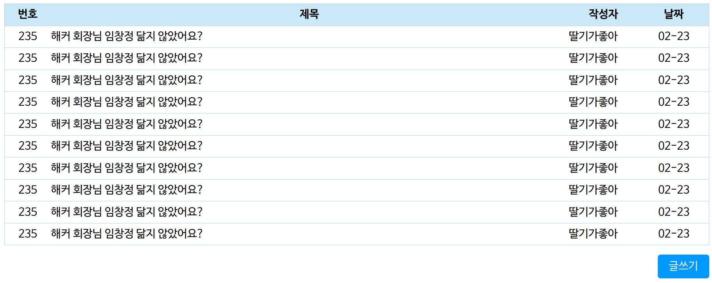

테두리는 CSS의 border 속성을 통해 줄 수 있다.
값은 테두리의 굵기, 테두리 유형, 테두리 색상 순으로 입력한다.
테두리 유형
border-top, border-bottom, border-left, border-right 속성을 통해 테두리의 일부만 줄 수 있다.
border-radius 속성을 통해 모서리를 둥글게 할 수 있다.
border-collapse 옵션의 값을 collapse로 설정하면, 셀 사이의 틈을 없앨 수 있다.
한 줄의 텍스트 박스는 input 태그에 type="text" 속성을 주어 작성하고, 여러 줄의 텍스트 박스는 textarea 태그를 사용하여 작성한다.
다음과 같은 게시판의 목록, 글쓰기, 글 조회 페이지를 작성한다.
